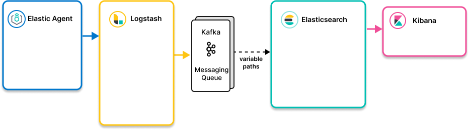

Ingest architecturesedit
We offer a variety of ingest architectures to serve a wide range of use cases and network configurations.
To ingest data into Elasticsearch, use the simplest option that meets your needs and satisfies your use case. For many users and use cases, the simplest approach is ingesting data with Elastic Agent and sending it to Elasticsearch. Elastic Agent and Elastic Agent integrations are available for many popular platforms and services, and are a good place to start.
You can host Elasticsearch on your own hardware or send your data to Elasticsearch on Elastic Cloud. For most users, Elastic Agent writing directly to Elasticsearch on Elastic Cloud provides the easiest and fastest time to value. Our hosted Elasticsearch Service is available on AWS, GCP, and Azure, and you can try it for free.
Decision tree
Data ingestion pipeline with decision tree
| Ingest architecture | Use when |
|---|---|
Elastic Agent to Elasticsearch
|
|
Elastic Agent to proxy to Elasticsearch
|
|
Elastic Agent to Logstash to Elasticsearch
|
|
Elastic Agent to Elasticsearch with Kafka as middleware message queue  |
|
|
|
|